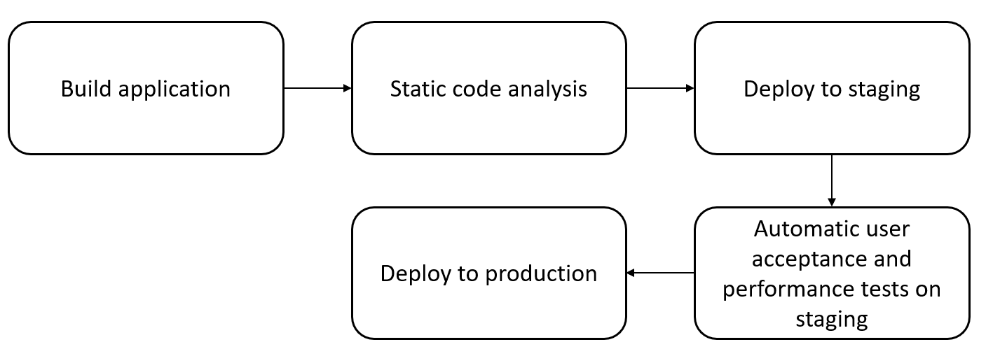
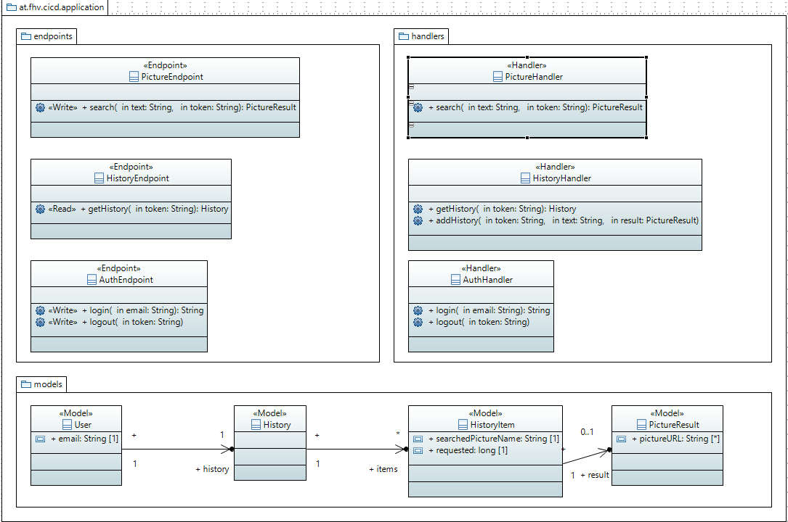
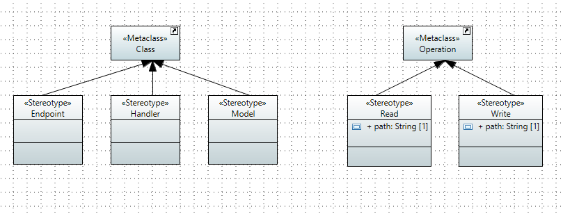

Search Pic Documentation
Based on the sentiment analysis project from Michael Sieber
Introduction
This documentation is part of the search pic example project for the course "Software quality and lifecycle" at the University of Applied Sciences Vorarlberg
This project was implemented with the help of the sentiment analysis project
Project description #back to top
This project demonstrates the usage of code generation from UML diagrams using Acceleo and publishing the content with a continuous integration and continuous delivery pipeline to ensure the quality of the product.Try the application: The project is separated into the following sub projects:
-
application

- The application is generated by Acceleo and enriched by custom business logic. It contains a HTML user interface which is connected via REST services to the backend. The project contains unit and integration tests which will be executed with each push to the master.
-
docs
- Documentation of the project inlcuding static documentation for the project setup and general description as well as generated documentation coming from the different CI/CD pipelines of individual projects.
-
tests
- Automated user acceptance tests written in Selenium.
-
uml
- UML diagrams used for generating the application.
Used technologies and cloud services #back to top
The following technologies and cloud service are used for this project (all of them provide a free tier for developers):-
Acceleo
- Generate source code from UML diagrams
-
Papyrus
- Eclipse plugin for creating UML diagrams
-
GitHub
- Source control management
-
Travis CI
- CI/CD pipeline
-
SpringBoot
- Framework for fast application implementation
-
Heroku
- Deployment and staging of the application
-
SonarCloud
- Static code analysis with SonarQube
-
Selenium
- Automated UI and integration testing
-
TestingBot
- Automated Search Pic UI tests and video recording
-
Flickr-Api
- Search for pictures
Walk through video #back to top
Walk CI/CD-Pipeline #back to top
UML diagrams #back to top
The class diagram used for generating the backend: -
- PictureEndpoint
- Contains operations for using an input-text and return the image for it
- HistoryEndpoint
- Contains operations for the analysis history for each user
- AuthEndpoint
- Contains operations for user login and logout
- PictureHandler
- Business logic for executing the search picture function with a webservice call to the flickr-api
- HistoryHandler
- Business lgoic for adding and loading analysis history
- AuthHandler
- Business lgoic for handling user login and logout
- User
- Represents a single user which uses the system
- History
- Represents the history for a specific user
- HistoryItem
- Single history item which contains a single item (picture) with the searched input
- Picture Result
- Represents a single result of a requested picture of a given input
The following stereotypes are used to specify the correct generator for the class:  The stereotypes are used to use different generators for different classes in the UML diagram.
Description of the stereotypes:
- Endpoint (class)
- This will generate a REST endpoint in Springboot
- Handler (class)
- This will generate a simple class which holds the business logic of the application
- Model (class)
- This will generate a JavaBean
- Read (operation)
- This will generate a GET endpoint with the given path as URL
- Write (operation)
- This will generate a POST endpoint with the given path as URL